Gâteau d’Halloween

Bouh! Ça y est nous sommes officiellement au mois d’octobre et vous devez avoir déjà vu un peu partout les décorations pour Halloween. Je ne sais pas si vous comptez le fêter ou pas mais en tout cas me voilà avec ma recette de gâteau d’Halloween et je peux vous dire que je me suis éclatée à le réaliser!
Je suis trop heureuse de partager avec vous ma nouvelle recette pour Halloween! L’an dernier, je m’étais déjà beaucoup amusée, mais cette fois encore plus (je pense que ça se voit^^). Cette fête est certes quelque chose de très commerciale mais personnellement elle m’amuse beaucoup (et je pense que si j’avais des enfants je m’amuserais encore plus!) car on peut vraiment faire des choses complément dingues (sans avoir l’air complément folle^^). Cette année je commence donc mes recettes pour Halloween avec un bon gros gâteau effrayant.
Comme vous pouvez le voir sur les photos, je me suis inspirée du fameux « gâteau Dexter »(gâteau sur lequel on trouve des brisures de verre avec du sang qui coule un peu partout) pour réaliser mon gâteau d’Halloween. J’aurai pu faire le gâteau Dexter en faisant gicler du sang rouge un peu partout mais je me suis dit qu’Halloween était avant tout une fête pour les enfants et que ce serait beaucoup plus amusant de faire des doigts de monstres avec du sang tout vert. Je vous invite d’ailleurs à réaliser le décor avec eux car ça peut vraiment être marrant!
Pour la génoise, rien de bien compliqué! J’ai réalisé un genre de victoria sponge cake au chocolat avec un glaçage au beurre à la meringue suisse à la vanille et c’était carrément délicieux! Le victoria sponge cake est (car je pense que vous devez être plusieurs à vous demander d’où ça vient) un gâteau anglais qui a la particularité d’être très aéré, qui peut être aromatisé à tous et n’importe quoi et qui fut créé pour la reine Victoria. A l’origine on dégustait ce gâteau (non pas pour Halloween) mais pour accompagner le thé avec par exemple un peu de confiture. Aujourd’hui, il est devenu le gâteau idéal pour le cake design et je vous confirme qu’il n’est pas mauvais du tout.
Bon j’arrête de parler maintenant et je vous laisse découvrir les étapes de préparation de ce gâteau carrément flippant!
Ingrédients
- Beurre à température ambiante - 250g
- Farine - 200g
- Sucre semoule - 225g
- Oeufs - 4
- Lait concentré non sucré - 50ml
- Cacao en poudre - 50g
- Levure chimique - 12g
- Extrait de vanille - 1 càc
- Sel - 1 pincée
- Sucre - 250g
- Eau - 100ml
- Jus de citron - 1 càc
- Blancs d'oeuf à temp ambiante - 8
- Sucre - 260g
- Beurre à temp ambiante - 460
- Sel - 1 pincée
Instructions
- Préchauffer le four à 180°
- Mélanger les ingrédients secs dans un bol (farine + cacao en poudre + levure + sel)
- Réserver
- Dans le bol de votre robot muni de la feuille (ou dans un saladier avec des batteurs électriques), battre le beurre avec le sucre jusqu'à ce que le mélange blanchisse
- Ajouter les œufs un à un en mélangeant bien à chaque ajout
- Ajouter l'extrait de vanille
- Verser la moitié de la quantité de lait concentré
- Mélanger
- Ajouter la moitié du mélange contenant les ingrédients secs
- Mélanger
- Verser le reste de lait concentré
- Mélanger
- Terminer d'ajouter les ingrédients secs en mélangeant au fur et à mesure
- Verser la pâte de manière égale (moi je pèse la pâte à chaque fois) dans 3 moules de 18 cm préalablement bien beurrer (je mets aussi du papier sulfurisé au fond et je beurre par dessus car il faut surtout pas que les génoises accrochent). Perso je n'ai qu'un moule alors je cuis mes gâteaux un par un. ou, si vous avez un moule assez haut, vous pouvez verser toute la pâte et une fois la génoise cuite vous n'aurez plus qu'à la découper en trois dans le sens de la longueur.
- Cuire à 180° pendant 20-25 minutes (vérifier la cuisson car cela peut varier de quelques minutes selon les fours)
- A la sortie du four, laisser refroidir les génoises
- Comme je l'ai dit plus haut vous pouvez les faire la veille. Pour cela, laissez-les refroidir complètement, puis conservez-les enroulées individuellement dans du film alimentaire au frigo
- Pour le glaçage je vous invite à cliquer ICI afin d'avoir un pas en pas en photo (attention car dans cette recette d'Halloween les doses sont doubles alors respectez bien les quantités inscrites plus haut dans les ingrédients)
- Quand les génoises sont totalement refroidies on peut commencer le glaçage Si vous avez la possibilité d'avoir un disque tournant, le glaçage sera plus simple
- Astuce : pour plus de facilité pour le service, le transport... découper un cercle de carton de 18-20 cm de diamètre
- Déposer une noix de glaçage sur le carton pour y faire adhérer la première génoise
- Couvrir le dessus de la première génoise de crème et ajuster la deuxième génoise par dessus
- Continuer ainsi de suite jusqu'à la dernière génoise
- Une fois toutes les génoises superposées, recouvrir le gâteau d'une TRÈS fine couche de crème (elle doit être presque transparente) Cette fine couche va permettre d'éviter par la suite qu'il y ait des miettes de gâteau qui viennent se mélanger au glaçage et ainsi d'obtenir une surface lisse et bien nette
- Laisser refroidir au frigidaire pendant 1 heure
- Pour créer les doigts de monstre, prendre des boules de pâte à sucre et former des boudins de la taille du moule.
- Faire rentrer le boudin dans les moules et appuyer légèrement (sans non plus écraser la pâte car on veut garder une forme ronde)
- A l'aide d'un petit couteau, enlever le surplus de pâte
- Accentuer les phalanges
- Aplatir les extrémités des doigts pour y insérer des ongles
- Pour les ongles, prendre un peu de pâte à sucre noire et former des ongles crochus
- Déposer les ongles dans la partie que vous avez aplatie
- Au niveau de la partie qui va être tranchée, faire remonter la pâte pour lui donner un aspect "peau tranchée" beuuurk
- Laisser les doigts de côté sur une plaque et préparer le reste
- Pour faire le sang au niveau des doigts, j'ai utilisé du "sang de monstre" que j'ai mis uniquement au niveau de la partie tranchée
- Pour le reste du sang, j'ai mélangé du colorant avec un peu d'eau
- Dans une casserole à fond épais, verser le sucre puis l'eau et ne surtout pas mélanger
- Quand le mélange commence à bouillir, ajouter le citron
- Vérifier la température du mélange avec un thermomètre
- Lorsque celui-ci indique 148° c'est prêt!
- Verser alors le mélange sur un tapis en silicone et laisser totalement refroidir
- Une fois que la fine couche de glaçage a bien refroidie on peut finir de glacer le gâteau avec le reste de glaçage
- Je n'ai pas voulu faire un gâteau tout lisse alors si vous voulez faire comme moi il suffit de donner des petits coups de spatule par-ci par-là et ça sera parfait
- Déposer vos doigts là où vous le souhaitez sur le dessus du gâteau
- Casser votre glace à l'aide d'un couteau (un coup sec)
- Déposer vos brisures de glace
- Mettre du sang de monstre à l'extrémité des doigts
- Avant de servir et à l'aide d'une seringue (facultatif pour la seringue^^) arroser de sang les brisures et laisser couler le long du gâteau
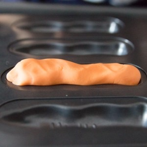
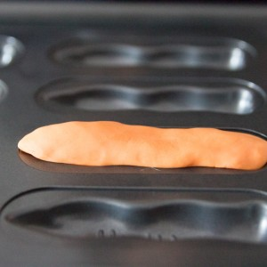
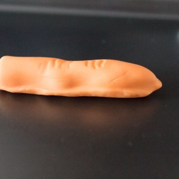
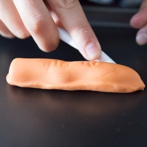
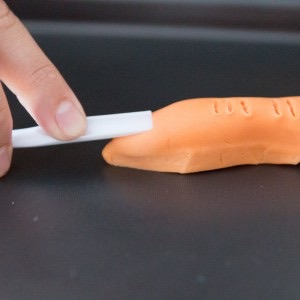
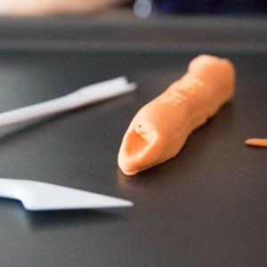
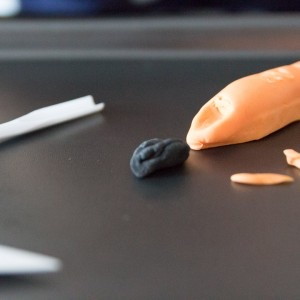
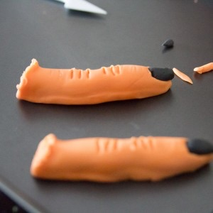
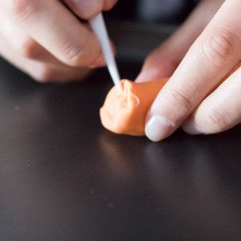
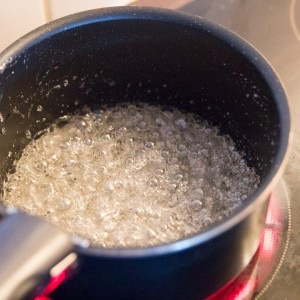
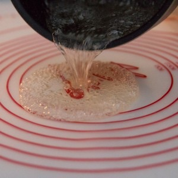
Les tips de la communauté
Gâteau Halloween très travaillé avec décoration impressionnante (doigts en pâte à sucre, caramel cassé en verre). Unanimement admiré pour le détail et l'ambiance créée. Pédagogie de la réalisation complète et décos alternatives décomposées.
Astuces
- Préparer les doigts en pâte à sucre la veille pour sec parfait
- Le caramel cassé doit sécher au moins 24h et reste croquant
- Utiliser des ustensiles à thème de la boutique Féerie Cake
- La sponge cake glaçée donne excellente base
Variantes suggérées
- Adapter les accessoires Halloween au magasin disponible localement
Ajustements signalés
- ce gâteau, superbe déco et shooting!
- bien que je vous propose quelque chose à faire pour l’occasion 😉
- bien prévoir à l’avance pour savoir ce que l’on va faire le jour J :)) !!! Contente qu’il te plaise! Bises